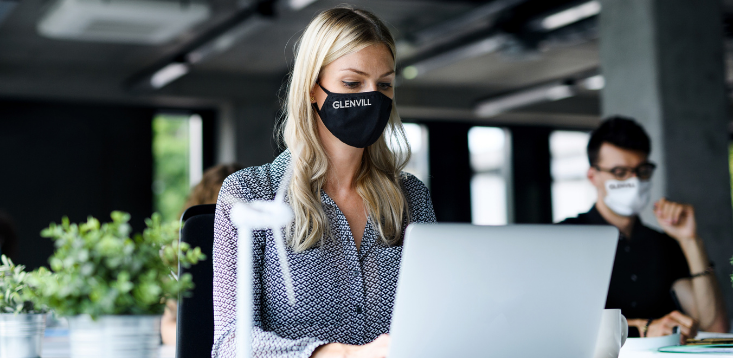
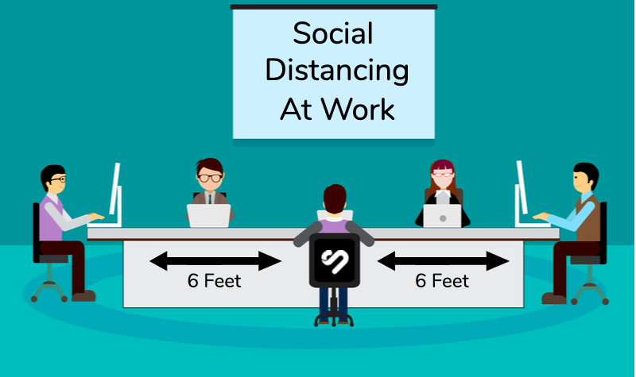

It's already acknowledged and accepted that you can't step out of the house without covering your face or wearing a mask. Once your company decides on opening doors for everyone to get back to work, you are going to have to wear masks and show up. Be very particular about this as the horror of coronavirus hasn't ended and doesn't seem to be ending anytime soon.
Now it's understandable that you might meet your office friends and colleagues after what seems like a long time. But this doesn't mean you put yourself and others' health at risk by coming in contact with anyone. Don't shake hands, don't hug each other, don't greet anybody by physical contact. Greet your office colleagues with words and gestures.
Don't get overwhelmed by seeing all your office people under the same roof. There is still high risk everywhere and you must maintain physical distance from each other at all costs, even if you know that the other person isn't a positive carrier of the virus.
